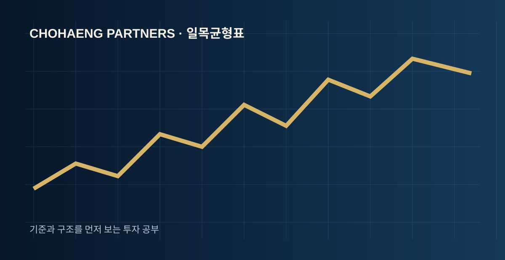
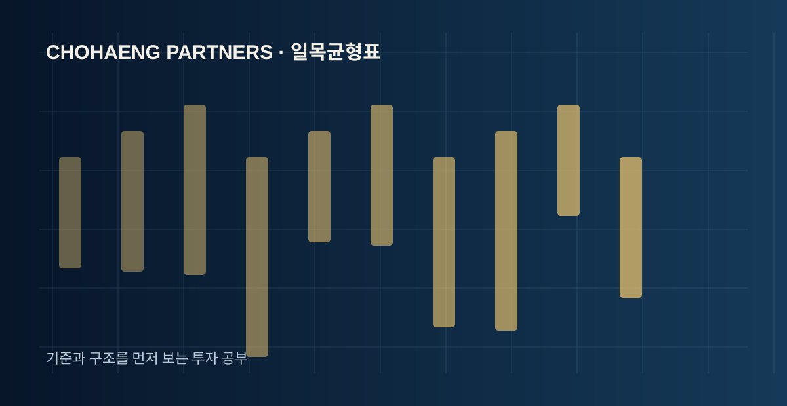
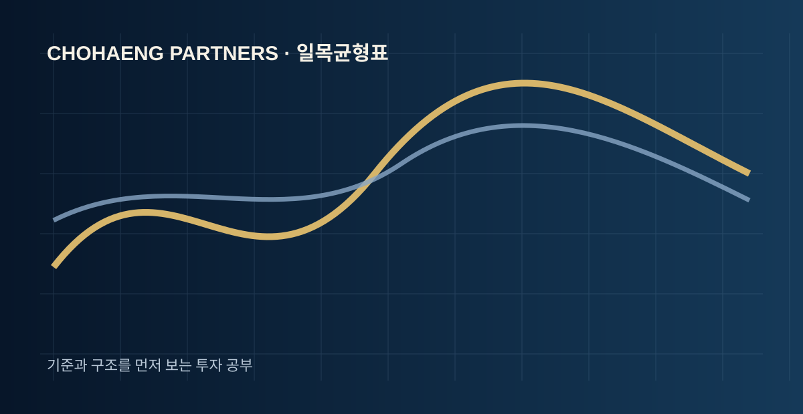

일목균형표의 기본 개념
가격·시간·균형 개념을 한 화면에 보여주는 복합 기술적 분석 지표입니다. 기술적 분석은 미래를 맞히기 위한 도구라기보다 현재 시장 상태를 정리하는 도구에 가깝습니다. 따라서 숫자 하나나 선 하나만 보는 대신 가격이 어느 위치에 있고, 이전 고점과 저점이 어떻게 형성됐으며, 거래 참여가 늘고 있는지를 함께 확인하는 것이 중요합니다.

전환선·기준선·구름대·후행스팬을 따로 보기보다 위치 관계를 구조적으로 해석하는 것이 중요합니다. 특히 같은 신호라도 상승 추세와 하락 추세, 강한 횡보 구간에서는 의미가 달라질 수 있습니다. 먼저 큰 흐름을 확인하고 보조지표를 그 다음 단계에서 활용하면 잘못된 해석을 줄일 수 있습니다.
일목균형표는 어떤 순서로 봐야 할까?

신호보다 중요한 것은 ‘맥락’
많은 초보 투자자가 일목균형표에서 특정 수치나 교차 신호만 외우려 합니다. 하지만 실제 차트에서는 신호가 반복되거나 늦게 나타날 수 있습니다. 그래서 첫 번째 질문은 “신호가 나왔는가?”보다 “지금 가격 구조가 어떤가?”가 되어야 합니다.
같은 일목균형표 신호라도 이전 고점 돌파 직후인지, 장기간 하락 뒤 반등 구간인지, 좁은 박스권 안인지에 따라 해석이 달라질 수 있습니다. 반드시 가격 구조와 함께 비교하세요.
실전에서 확인할 5가지
- 상위 시간대 추세와 같은 방향인지 확인합니다.
- 최근 지지선·저항선과 현재 가격의 위치를 비교합니다.
- 일목균형표가 단순히 한 번 반응한 것인지 연속적인 변화를 보이는지 확인합니다.
- 거래량 증가가 동반되는지 살펴봅니다.
- 진입 전 손절 기준과 무효화 조건을 먼저 정합니다.

일목균형표를 사용할 때 주의할 점
기술적 지표는 과거 가격과 거래 데이터를 바탕으로 계산되므로 후행성이 존재합니다. 강한 추세에서는 과매수·과매도 상태가 오래 지속될 수도 있고, 횡보장에서는 잦은 교차가 발생해 신호의 신뢰도가 떨어질 수도 있습니다. 따라서 지표를 매매 버튼처럼 사용하기보다 상황을 정리하는 보조 도구로 활용하는 편이 좋습니다.
또한 한 번의 성공 사례만으로 설정값이나 전략을 고정하지 않는 것이 중요합니다. 종목의 변동성, 시장 분위기, 시간대가 달라지면 같은 설정도 다른 결과를 낼 수 있습니다.
일목균형표 FAQ
일목균형표는 초보자도 사용할 수 있나요?
일목균형표는 단독 신호보다 가격 구조, 추세, 거래량과 함께 해석하는 것이 좋습니다. 특정 수치만 정답처럼 외우기보다 여러 구간을 직접 비교하며 기준을 세워보세요.
일목균형표만 보고 매수·매도를 결정해도 되나요?
일목균형표는 단독 신호보다 가격 구조, 추세, 거래량과 함께 해석하는 것이 좋습니다. 특정 수치만 정답처럼 외우기보다 여러 구간을 직접 비교하며 기준을 세워보세요.
일목균형표는 어떤 시장에서 많이 사용하나요?
일목균형표는 단독 신호보다 가격 구조, 추세, 거래량과 함께 해석하는 것이 좋습니다. 특정 수치만 정답처럼 외우기보다 여러 구간을 직접 비교하며 기준을 세워보세요.
일목균형표 신호가 늦게 나오는 경우도 있나요?
일목균형표는 단독 신호보다 가격 구조, 추세, 거래량과 함께 해석하는 것이 좋습니다. 특정 수치만 정답처럼 외우기보다 여러 구간을 직접 비교하며 기준을 세워보세요.
일목균형표와 거래량을 같이 봐야 하나요?
일목균형표는 단독 신호보다 가격 구조, 추세, 거래량과 함께 해석하는 것이 좋습니다. 특정 수치만 정답처럼 외우기보다 여러 구간을 직접 비교하며 기준을 세워보세요.
일목균형표는 단기 투자에만 적합한가요?
일목균형표는 단독 신호보다 가격 구조, 추세, 거래량과 함께 해석하는 것이 좋습니다. 특정 수치만 정답처럼 외우기보다 여러 구간을 직접 비교하며 기준을 세워보세요.
일목균형표를 볼 때 가장 흔한 실수는 무엇인가요?
일목균형표는 단독 신호보다 가격 구조, 추세, 거래량과 함께 해석하는 것이 좋습니다. 특정 수치만 정답처럼 외우기보다 여러 구간을 직접 비교하며 기준을 세워보세요.
일목균형표 공부는 어떤 순서로 시작하면 좋나요?
일목균형표는 단독 신호보다 가격 구조, 추세, 거래량과 함께 해석하는 것이 좋습니다. 특정 수치만 정답처럼 외우기보다 여러 구간을 직접 비교하며 기준을 세워보세요.
낯선시장에서 길을 잃지 않도록
초행파트너스의 투자 리서치와 교육 콘텐츠를 통해 판단 기준을 차근차근 정리해보세요.